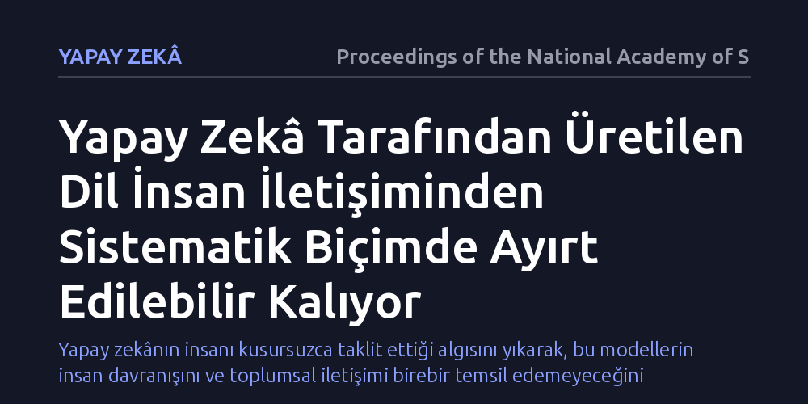

YAPAY-ZEKA · Proceedings of the National Academy of Sciences · 2026-10-23
Çalışma, büyük dil modellerinin insan iletişimini ne kadar aslına uygun taklit edebildiğini ve üretilen metinlerin insandan ayırt edilip edilemeyeceğini araştırdı. Bulgular, yapay zekâ tarafından üretilen metinlerin insan iletişiminden sistematik olarak ayırt edilebilir kaldığını ortaya koyuyor.
Yapay zekânın insanı kusursuzca taklit ettiği algısını yıkarak, bu modellerin insan davranışını ve toplumsal iletişimi birebir temsil edemeyeceğini gösterir.

Son yıllarda sosyal bilimciler ve araştırmacılar, insan davranışını, kamuoyu tepkilerini ve toplumsal iletişimi simüle etmek amacıyla büyük dil modellerine giderek daha fazla başvuruyor. Bu modellerin ürettiği metinlerin insan elinden çıkmış gibi görünmesi, onların insan düşüncesini ve iletişimini kusursuz bir şekilde ikame edebileceği yönünde bir kabul yaratmış durumda.
Ancak bu durum kritik bir soruyu beraberinde getiriyor: Yapay zekâ modelleri insan ifadesini gerçekten ne kadar sadakatle yansıtıyor? Modeller yüzeyde ne kadar akıcı görünürlerse görünsünler, ürettikleri dil insan iletişiminden sistematik biçimde ayrışan yapısal kalıplar barındırıyor mu? Araştırma tam olarak bu temel soruya yanıt arıyor.
Araştırmacılar, yapay zekâ metinleri ile gerçek insan iletişimi arasındaki farkları belirlemek amacıyla geniş çaplı çevrim içi insan etkileşimlerini temel aldı. Sosyal medya ortamındaki (Reddit) zengin ve doğal insan paylaşımları, dil modellerinin ürettiği benzer konulu çıktılarla sistematik biçimde kıyaslandı.
Bu kıyaslamada hem kural ve sözlük tabanlı duygu analizi araçları (VADER ve Empath) hem de anlamsal derinliği ve cümle temsillerini inceleyen gelişmiş modeller (Sentence-BERT) kullanıldı. Böylece yapay zekâ ve insan metinleri; kelime çeşitliliği, duygu yükü ve anlamsal kalıplar bakımından çok boyutlu hesaplamalı yöntemlerle masaya yatırıldı.
Elde edilen bulgular, yapay zekâ tarafından üretilen dilin insan iletişiminden rastgele hatalarla değil, aksine sistematik ve öngörülebilir kalıplarla ayrıldığını gösteriyor. Modeller dil bilgisi açısından kusursuza yakın cümleler kursalar bile, insanların doğal iletişim akışındaki duygusal dalgalanmaları, bağlamsal incelikleri ve kendine has üslup çeşitliliğini aynı dağılımla yansıtamıyor.
Özellikle duygu yoğunluğu, ifade esnekliği ve tematik çeşitlilik açısından yapay zekâ çıktıları belirgin bir tekdüzelik ve ayırt edici yapısal izler taşıyor. Bu durum, insan gözü ilk bakışta yanılsa dahi algoritmik ve hesaplamalı düzeyde yapay zekâ dilinin insan dilinden her zaman belirgin biçimde ayrışabildiğini kanıtlıyor.
Bu sonuçlar, yapay zekâyı insan deneklerin veya toplumsal grupların doğrudan yerine koyarak araştırma yapma eğilimine karşı önemli bir bilimsel uyarı niteliğindedir. Yapay modellerle üretilen sosyal simülasyonların, insan toplumunun çok katmanlı iletişimini birebir temsil ettiğini varsaymak yanıltıcı sonuçlar doğurabilir.
Yapay zekânın insan benzeri metinler üretmesi, insan gibi düşündüğü veya insan iletişiminin karmaşık doğasını tümüyle kopyalayabildiği anlamına gelmez. Dolayısıyla hem akademik araştırmalarda hem de yapay zekâ tabanlı toplumsal uygulamalarda bu modellerin sınırlarının bilinmesi ve insan faktörünün yerini bütünüyle alamayacağının kabul edilmesi gerekir.